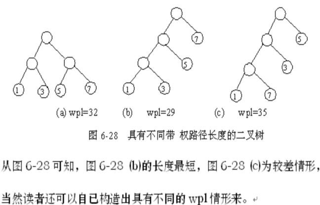
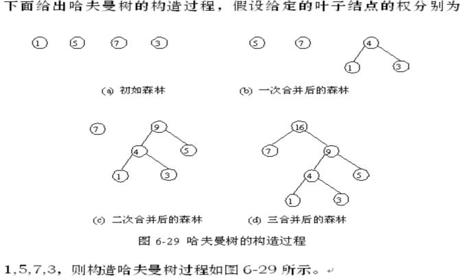
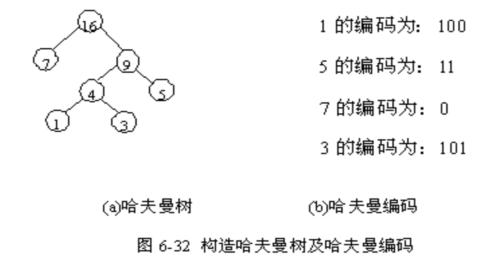

|
|
第六章 树和二叉树
§6.5 赫夫曼树及其应用
赫夫曼树，又称最优树，是一类带权路径长度最短的树，应用很广泛。 <6.5.1 最优二叉树
一、▲：基本术语
1．路径和路径长度
在一棵树中，从一个结点往下可以达到的孩子或子孙结点之间的通路，称为路径。通路中分支的数目称为路径长度。
若规定根结点的层数为1，则从根结点到第L层结点的路径长度为L-1。
2．结点的权及带权路径长度
若将树中结点赋给一个有着某种含义的数值，则这个数值称为该结点的权。
结点的带权路径长度为：从根结点到该结点之间的路径长度与该结点的权的乘积。
3. 树的路径长度
从树根到每个结点的路径长度之和。
4．树的带权路径长度
树的带权路径长度规定为所有叶子结点的带权路径长度之和。
5．哈夫曼树
在一棵二叉树中，若带权路径长度达到最小，称这样的二叉树为最优二叉树，也称为哈夫曼树(Huffman tree)。
例如，给定叶子结点的权分别为1,3,5,7，则可以得到如图6-28所示的不同二叉树。

二、哈夫曼树的构造
假设有n个权值，则构造出的哈夫曼树有n个叶子结点。 n个权值分别设为 w1,w2,…,wn,则哈夫曼树的构造规则为：
(1) 将w1,w2,…,wn看成是有n 棵树的森林(每棵树仅有一个结点)；
(2) 在森林中选出两个根结点的权值最小的树合并，作为一棵新树的左、右子树，且新树的根结点权值为其左、右子树根结点权值之和；
(3)从森林中删除选取的两棵树，并将新树加入森林；
(4)重复(2)、(3)步，直到森林中只剩一棵树为止，该树即为我们所求得的哈夫曼树。

从图6-29可知，n 个权值构造哈夫曼树需n-1次合并，每次合并，森林中的树数目减1，最后森林中只剩下一棵树，即为我们求得的哈夫曼树。
6.5.2 哈夫曼编码
一、问题的提出：
通信中，可以采用0,1的不同排列来表示不同的字符，称为二进制编码。而哈夫曼树在数据编码中的应用，是数据的最小冗余编码问题，它是数据压缩学的基础。即：若要设计长短不等的编码，则必须是任一字符的编码都不是另一个字符的编码的前缀，这种编码称为前缀编码。
采用的方法为：若每个字符出现的频率相同，则可以采用等长的二进制编码，若频率不同，则可以采用不等长的二进编码，频率较大的采用位数较少的编码，频率较小的字符采用位数较多的编码，这样可以使字符的整体编码长度最小，这就是最小冗余编码的问题。 而哈夫曼编码就是一种不等长的二进制编码，且哈夫曼树是一种最优二叉树，它的编码也是一种最优编码，在哈夫曼树中，规定往左编码为0，往右编码为1，则得到叶子结点编码为从根结点到叶子结点中所有路径中0和1的顺序排列。
例如，给定权{1,5,7,3}，得到的哈夫曼树及编码见图6-32 (假定权值就代表该字符名字)。

因此，假设通信中电文总长最短的二进制前缀编码即为以n种字符出现的频率作权，设计一棵赫夫曼树的问题，由此得到的二进制前缀编码便为赫夫曼编码。构成赫夫曼树后，编码需走一条从叶子到根的路径，而译码相反。
|